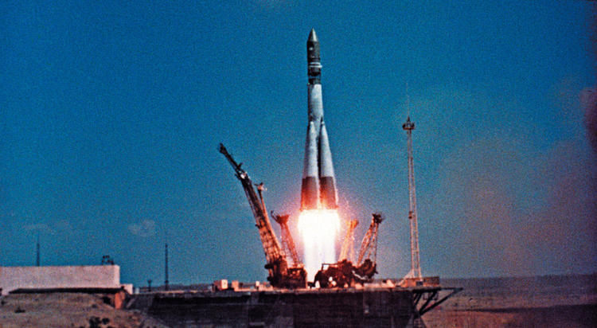
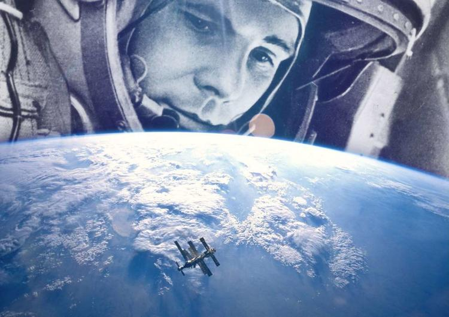
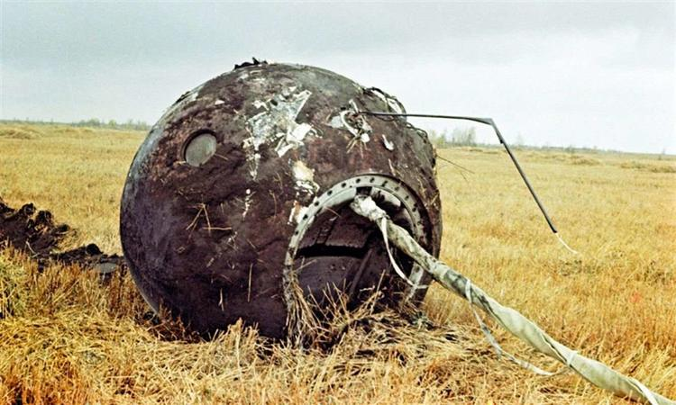

«Восток-1», пилотируемый Юрием Гагариным, стартовал с Байконура 12 апреля 1961 года в 09:07 (время московское). Руководителем старта являлся ракетный инженер Анатолий Кириллов — он давал команды по стадиям пуска ракеты и осуществлял контроль за их выполнением, следя за ситуацией из командной рубки.

Как только ракета-носитель начала подъём, Гагарин сказал то самое знаменитое слово: «Поехали!». В целом ракета-носитель исполнила свои функции без каких-либо проблем. Лишь на заключительной стадии не сработала система, отвечающая за отключение двигателей третьей ступени. Двигатели выключились лишь после того, как сработал дублирующий механизм. К этому моменту корабль-спутник уже находился на сто километров выше запланированной орбиты.
Гагарин, будучи на орбите, рассказывал о собственных наблюдениях. Он в окно иллюминатора смотрел на Землю с её облаками, горами, океанами и реками, видел облака и атмосферу из черноты космоса, Солнце и далёкие звёзды. Ему понравился открывшийся ему вид нашей планеты. Он даже призвал людей хранить эту красоту, а не разрушать её. Больше всего Гагарина впечатлила линия горизонта — она отделяла земной шар от очень чёрного неба.

Гагарин также провёл несколько экспериментов: поел, выпил воду, сделал пару записей простым карандашом. В какой-то момент он отпустил карандаш, и тот сразу же начал уплывать от него. Гагарин пришёл к выводу, что подобные вещи в невесомости следует фиксировать.
До полёта оставалось загадкой, как психика человека может отреагировать на условия космоса, поэтому внутри корабля была реализована особая защита от умопомешательства пилота. Чтобы управлять кораблём, Гагарин должен был перейти на ручное управление. А для этого ему необходимо было открыть конверт с одним листочком, на котором была записана математическая задача. Только решив её, можно было узнать код доступа к панели управления.
В целом полёт прошёл спокойно, серьёзных нештатных ситуаций не случилось. Длительность этого полёта составила 108 минут, за это время корабль-спутник сделал один-единственный оборот вокруг земного шара.
Но при возвращении на Землю, во время посадки, тормозная система немного подвела и произошло небольшое отклонение от курса.
Во время учебы Гагарину удавалось успешно справляться со всеми заданиями, за исключением посадки самолета. Управляемое курсантом воздушное судно все время «клевало носом». В училище к обучающимся предъявлялись чрезвычайно строгие требования, поэтому Гагарина решили отчислить.
На высоте семи километров в полном соответствии с планом Гагарин осуществил катапультирование, после чего модуль и космонавт в скафандре стали спускаться вниз на двух разных парашютах (этот способ посадки использовался, кстати, и в других пяти ракетах «Восток»). Регулируя парашютные стропы, космонавт смог избежать попадания в прохладные воды Волги и приземлился на берегу. Так закончился этот космический полёт
